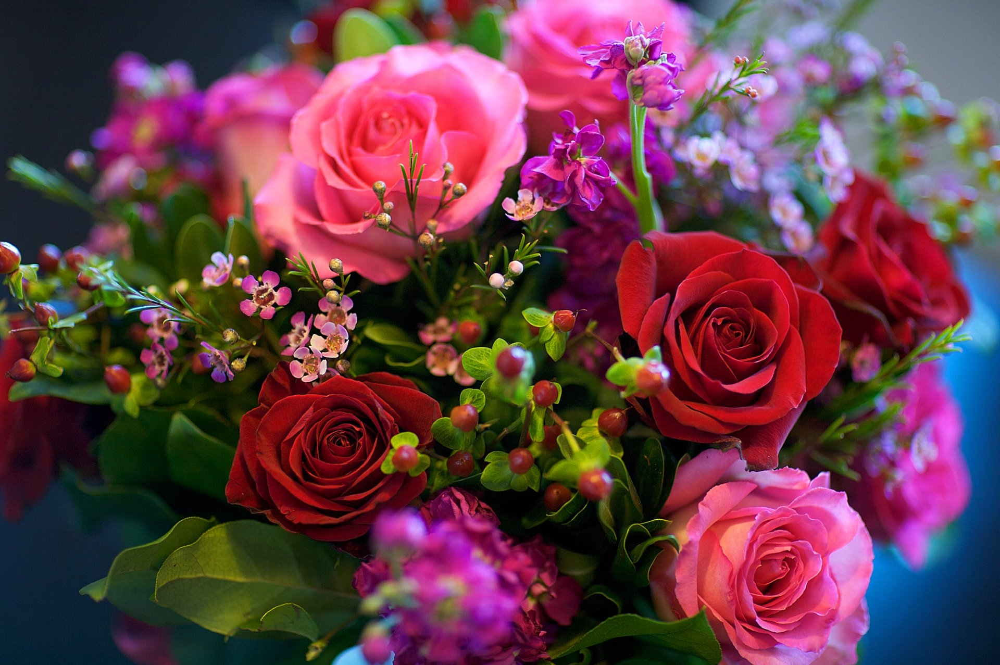

Rose
The rose is a symbol of love, beauty, and passion. Often given on Valentine’s Day and anniversaries.

Sunflower
Sunflowers symbolize loyalty and positivity. Known for following the sun's path through the sky.

Tulip
Tulips signify perfect love and elegance. A popular flower in springtime across the world.

Lavender
Lavender promotes peace and calm. Often used in essential oils and wellness rituals.

Daisy
Daisies are known for innocence and purity. A cheerful flower that represents new beginnings.

Marigold
Marigolds symbolize passion and creativity. Widely used in Indian festivals and celebrations.